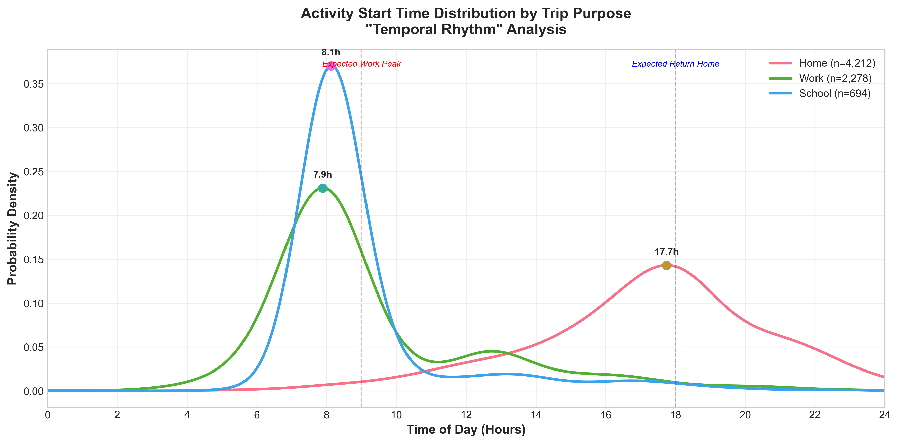
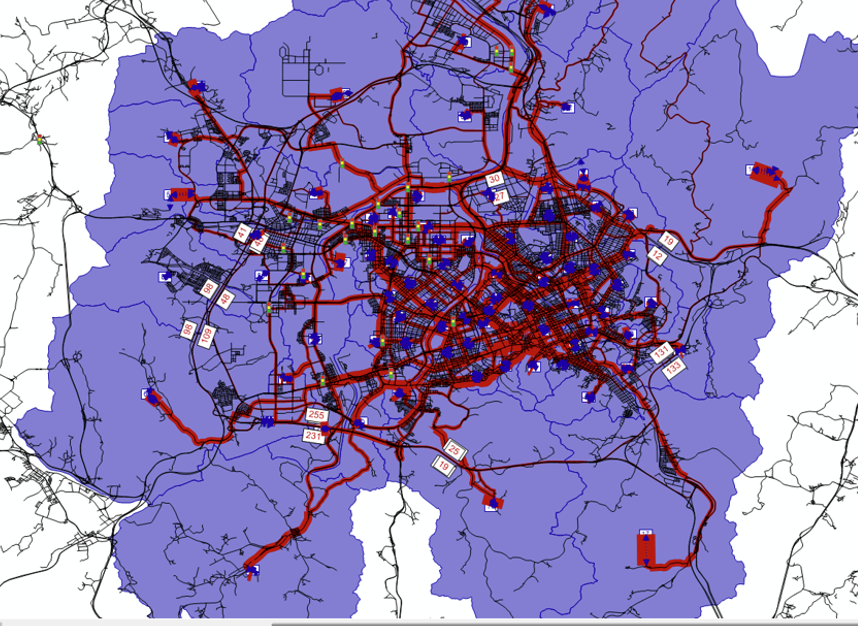
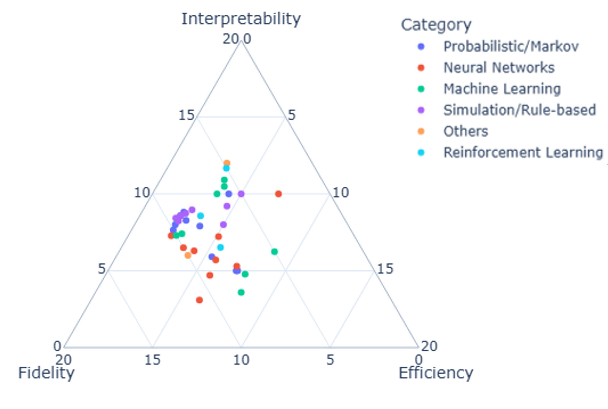

I study large language models in the pipelines that produce official travel
statistics: the data behind mode-share figures, activity-based demand models, and infrastructure
investment cases. My research documents a failure mode with real policy stakes. LLMs will "repair" data to
satisfy whatever an automated verifier asserts, even when the verifier itself is wrong, and the
result carries a verified label it did not earn.
The constructive half of the work builds automated checks that flag only what the
data can actually prove, not artifacts of how it was measured, so repair and generation loops are
never asked to fix what the data cannot show is broken. Five connected studies carry this arc from
measurement to guarantee, and my dissertation extends it from repairing observed travel diaries to
generating certified daily activity schedules, the core representation behind activity-based travel
demand models.
961 → 42studies screened into an evidence-scored map of AI travel models
32–37%how often LLM "repairs" restore the known true value, despite passing automated checks

When a city travels: activity start times by purpose (Daejeon 2021).

Where it travels: Daejeon zones and demand in PTV Visum.
News
Two manuscripts on verification soundness for LLM data repair entered double-blind peer review. Details will appear here after notification.
Revised manuscript of the AI-ABM trilemma review resubmitted to the International Journal of Urban Sciences.
Full audit of LLM travel-diary repair in preparation for Transportation Research Part C.
Research

The interpretability, fidelity, and efficiency map: 42 AI-enhanced activity-based models scored on three axes (from the review below). Most cluster toward fidelity.
An Evidence-Based Review of AI-Enhanced Activity-Based Models: Trade-offs Between Interpretability, Fidelity, and Efficiency
Kervin Joshua Lucas, Inhi Kim
Int. J. of Urban Sciences · revision under review
42 scored studies, one map: AI travel models pile up on predictive
fidelity, while behavioral interpretability and computational efficiency go chronically unmeasured.
Progress in AI-enhanced activity-based travel models is constrained by an under-articulated
three-way trade-off among behavioral interpretability, predictive fidelity, and computational
efficiency. From a structured review (961 records screened to 42 core studies from 2001 to 2025), every
study is scored on falsifiable indicators and mapped into a normalized trilemma space
(I + F + E = 20) with a strict-Pareto frontier. Quality is use-case-dependent: progress reads as
movement within target regions, not toward a universal optimum.
961 → 42screening funnel to core scored studies
I + F + E = 20constant-sum trilemma space, Pareto frontier
Two manuscripts under double-blind review
Titles & authors withheld during blind review
Under review · double-blind venue
The diagnostic and constructive core of the arc: one paper shows that
verifier-grounded LLM repair complies with flawed automated checks; the other builds checks that
flag only what the data can prove. Titles, venue, and results are withheld here until notification
(expected late 2026), then listed in full.
Auditing Verifiers, Prompts, and Transport Statistics in LLM Travel-Diary Repair
Kervin Joshua Lucas, Tengfeng Lin, Inhi Kim
Transportation Research Part C · in preparation
Passing checks ≠ recovering truth: LLMs resolved up to 86% of flags in
two national travel surveys but restored the known true value in barely a third of cases.
Auditing the Daejeon subset of Korea's 2021 National Travel Survey and Australia's VISTA
FY2022/23, this study separates verifier compliance, truth recovery, and preservation of
population transport statistics, three things usually conflated. Unsupported verifier rules, not
real data errors, decided which records were sent for repair; repaired pipelines cut observed
walk share by 8.4 to 14.4 percentage points; and evidence-qualified screening found zero cases where
released fields could establish an automatic replacement. The contribution is a protocol that
separates review from rewriting and evaluates population effects under the official survey design.
78.6–85.9%of injected flags "resolved" by LLM repair…
32.1–37.4%…but the known true value restored in only a third
0 eligibleauto-repair cases among 8,940 assessable respondents
Verification Governance for Generative AI in Official Travel Data
Kervin Joshua Lucas, Inhi Kim
Transport Policy · VSI on Generative AI · planned
Who audits the algorithm that audits the data? A governance framework
and agency-facing checklist for generative AI entering official statistics pipelines.
Scope
The policy companion to the technical arc. GenAI data tools are entering the layer that feeds
mode-share statistics, demand models, and investment cases; the documented failure is
sociotechnical. A "verified" label transferred institutional trust to broken output while no
actor owned data-defect liability. Proposes provenance requirements, verifier auditing, soundness
standards, and procurement language for transport agencies.
Dissertation
LLM-Powered Activity Scheduling with Sound Verifier Guarantees
(working title). Thesis: LLM-in-the-loop pipelines can generate and repair daily activity schedules
that are simultaneously interpretable, distributionally faithful, and efficient, provided
they are grounded by verifiers that are sound under measurement uncertainty.
Ch.
Stage
Focus
Status
2
Measure
The interpretability, fidelity, and efficiency trilemma
IJUS review, R1 in review
3
Diagnose
How unsound verifiers corrupt LLM repair
manuscript, in review
4
Construct
Provably sound verification
manuscript, in review
5
Apply
LLM-Modulo repair of survey diaries
TRC, in preparation
6
Generate
Verifier-certified activity scheduler (NHTS 2022)
new core work, designed
Chapter 6 design
Chapter 6 generalizes the repair loop into a generation loop: an LLM proposes a full-day
activity schedule for a persona, a sound scheduler-verifier audits it, provable violations return as
structured critiques, and the loop accepts only at zero provable violations, with every accepted
schedule carrying a constraint certificate. Built on the NHTS 2022 NextGen survey (10,592 person-day chains,
31,074 trips), evaluated on the Chapter 2 trilemma axes against transformer, Markov, and rule-based
baselines.
Publications
Peer-reviewed journal and conference work. Full list and live citation counts on
Google Scholar.
Strategic transit route recommendation considering multi-trip feature desirability using a logit model with optimal travel-time analysis
M.A. Guillermo, M.C. Rivera, K.J.C. Lucas, R.S. Concepcion II, A.A. Bandala, et al. · Journal of Advanced Computational Intelligence and Intelligent Informatics · 2022 · 7 citations
Korean conferences
Recursive neurosymbolic optimization for the semantic repair of structurally inconsistent household travel surveys
K.J. Lucas, J. Lee, I. Kim · Korea ITS Society Conference (한국 ITS 학회 학술대회) · 2026
Prediction models for travel mode and trip purpose using operator networks to advance activity-based models
K.J. Lucas, I. Kim · Korean Society of Transportation Conference (대한교통학회 학술대회) · 2025
Trip generation in the Philippines: analysis of traditional, geospatial, and AI-based models
K.J. Lucas, A. Fillone, I. Kim · Suwon ITS Asia-Pacific Forum · 2025
Evaluating spatiotemporal influence on trip-chain prediction
K.J. Lucas, J. Lee, S. Paek, I. Kim · Suwon ITS Asia-Pacific Forum · 2025
여행 연쇄 예측에서 시공간적 영향 평가 (Evaluating spatiotemporal influence on trip-chain prediction)
K.J. Lucas, J. Lee, S. Paek, I. Kim · Korea ITS Society 2025 Spring Conference (한국 ITS 학회 2025 춘계학술대회) · 2025
Developing a framework for a complete transport forecasting system: a literature review
K.J. Lucas, I. Kim · Korea ITS Society Conference (한국 ITS 학회 학술대회) · 2024
International & Philippine conferences
Transportation Infrastructure Impacts Calculator (TIIC): an infrastructure assessment tool
A.E.C. Ruiz, N.R. Roxas Jr, K.I.D.Z. Roquel, K.D.S. Yu, A.M. Fillone, K.J.C. Lucas · Transportation Research Procedia 82 · 2025
What if Metro Manila developed a comprehensive rail transit network?
J.R.F. Regidor, D.S. Aloc, A.M. Fillone, K.J.C. Lucas · Proceedings of the Eastern Asia Society for Transportation Studies (EASTS), vol. 11 · 2017 · 9 citations
Metro Manila transportation network: big data analytics and applications
A. Fillone, E. Dadios, N. Roxas, M. Era, K. Lucas, R. Abad, K. Roquel · Sustainable Mobility Research Unit · 2020 · 2 citations
GIS for better public transportation and transit
M.C. Paringit, K.J. Lucas, M. Cutora · De La Salle University Research Congress, Manila · 2019 · 1 citation
Proposed improvement of the public transport service routes in Northern Iloilo, Region VI, Philippines
A.A. Angela, K.K.L. de Guzman, R.D.M. Sales, J.T.C. Tan, K.J.C. Lucas, et al. · De La Salle University
Impact assessment of traffic management measures in the vicinity of De La Salle University-Manila
D.C. Carpio, A.M. Fillone, J.C.S. Chua, K.J.C. Lucas · De La Salle University
Other work
Earlier applied studies that shaped this direction, including trip generation under
spatial heterogeneity in Aklan, Philippines, comparing classical, geospatial (GWR), and
operator-learning (DeepONet) models.
Education
PhD, MobilitySince 2024
Cho Chun Shik Graduate School of Mobility, KAIST · Daejeon, South Korea
Third-year candidate, expected 2028. Travel demand modeling and trustworthy AI for activity-based models.
MSc, Civil Engineering2017–2020
De La Salle University · Manila, Philippines
Thesis: effects of traffic congestion pricing schemes on travel behavior in Bonifacio Global City, Taguig.
BSc, Civil Engineering2009–2014
De La Salle University · Manila, Philippines
Experience
Assistant Professorial Lecturer2021–2023
De La Salle University · Part-time
Taught transportation engineering and transport-modeling software courses.
Science Research Specialist2015–2022
Civil Engineering Department, De La Salle University · Full-time
Transportation-planning data collection and analysis; modeled Metro Manila road and traffic networks for transport studies; supported teaching and departmental research.